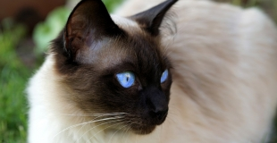
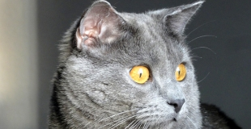
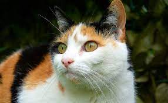
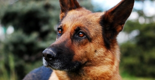
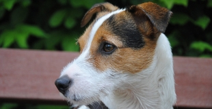

Les animaux de compagnie
Les animaux de compagnie font aujourd'hui pratiquement partie des familles, avec le chien et le chat dans les premiers rôles.
Les chats
Le Chat domestique (Felis silvestris catus) est la sous-espèce issue de la domestication du Chat sauvage (Felis silvestris), mammifère carnivore de la famille des Félidés.



Les chiens
Le Chien (Canis lupus familiaris) est la sous-espèce domestique de Canis lupus (Loup gris), un mammifère de la famille des Canidés (Canidae), laquelle comprend également le dingo, chien domestique retourné à l'état sauvage.


Les rongeurs domestiques
Les rongeurs ou Rodentiens (Rodentia) sont un ordre de mammifères placentaires (le plus grand ordre de mammifères, regroupant plus de 2 000 espèces). Les rongeurs sont utilisés en tant que source de nourriture, pour la confection de vêtements, en tant qu'animaux de compagnie ou de laboratoire.
Hamster
Le hamster est un petit animal de la famille des muridés, à l’instar des rats et des souris. Il est domestiqué depuis les années 1930 seulement.
Lapin
Le lapin est un animal domestique très apprécié et plébiscité. S’il a avant tout une image "d'ami des enfants", c’est un animal affectueux et calme qui convient à toutes les générations.